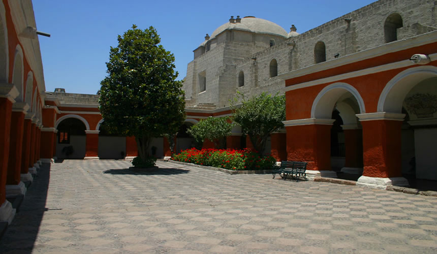

AREQUIPA
Arequipa es la capital de la época colonial de la región de Arequipa en Perú. La rodean 3 volcanes y cuenta con edificios barrocos construidos de sillar, una piedra volcánica blanca. En su centro histórico, se encuentra la Plaza de Armas, una imponente plaza principal, y al norte de ella está la Basílica Catedral neoclásica del siglo XVII, que alberga un museo donde se exhiben obras de arte y objetos religiosos.

Andrea: El Monasterio de Santa Catalina, un convento fundado en 1579, está amurallado en un complejo similar a una villa que cuenta con claustros y calles de adoquines. La Casa del Moral, una mansión del siglo XVIII convertida en museo, alberga mapas coloniales, antiguas monedas y arte religioso. El Museo Santuarios Andinos exhibe artefactos del Imperio Inca y una momia congelada que data del siglo XV. En el distrito suburbano de Yanahuara, un mirador elevado, que se destaca por sus arcos de piedra blanca, ofrece vistas panorámicas de la ciudad y los volcanes circundantes. Arequipa también es una vía de acceso para el Cañón del Colca, conocido por su profundidad, con senderos de excursión, sitios de campamento y vida salvaje, como el cóndor andino.
El Monasterio de Santa Catalina de Siena, o Convento de Santa Catalina, es un complejo turístico religioso ubicado en el centro histórico de Arequipa, departamento de Arequipa, Perú.
La plaza Mayor o plaza de Armas es uno de los principales espacios públicos de Arequipa y el lugar de fundación de la ciudad.
La Catedral de Arequipa es considerada uno de los primeros monumentos religiosos del siglo XVII en Arequipa. Fue construida con ignimbrita, y bóvedas de ladrillo; es el santuario principal de la ciudad ocupando todo el lado norte de la Plaza de Armas.
El Centro Histórico de Arequipa es el núcleo fundacional y la aglomeración de barrios con características propias que la circundan, se extiende sobre una superficie de 332 hectáreas y dentro de ella existen 5817 predios de los cuales 500 son categorizados como patrimonio, las edificaciones han sido construidas generalmente en el siglo XIX sobre el sitio de edificios coloniales anteriormente destruidos por el terremoto de 1868. Las casonas, generalmente hechas en sillar, se caracterizan por sus arcos semi-circulares y sus techos en bóveda. Las estructuras de sillar poseen siempre los muros gruesos: 1 a 1.5 metros para las habitaciones, más de 2 metros para las iglesias. Gracias a la utilización de mortero de cal, los muros se muestran homogéneos, imagen que se refuerza con las bóvedas de ladrillo o de sillar que se justifican en la rareza de la madera.